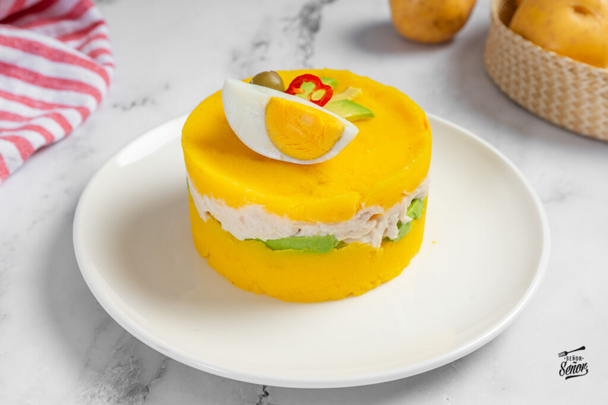

Receta Causa
Home

Descripcion
Se trata de un plato frío muy suave y cremoso en el que las distintas capas esconden ingredientes tan agradables como la patata cocida, el aguacate o una crema de pollo y mayonesa. Al comer juntos los distintos ingredientes, sus sabores y texturas se mezclan en cada bocado y resulta un delicioso manjar. Vamos a prepararlo que ya veréis cómo es una receta sencilla que os encantará a todos.
Ingredientes
- 8 papas amarillas peruanas (1/2 kg)
- 1-2 limas
- 2-3 cucharadas de pasta de ají amarillo
- 1/2 pechuga de pollo
- 1/2 aguacate (palta)
- 2 cucharadas de mayonesa
- 1/4 de cebolla morada
- Huevo cocido
- Aceite de oliva virgen extra
- Sal
Pasos
- En un recipiente, mezcla la papa amarilla sancochada con un chorro de zumo de limón, sal, pimienta y la pasta de ají amarillo licuado. Esta es la base de la causa, y debes obtener una masa suave y bien integrada. Para lograr la textura perfecta, puedes amasarla con las manos o utilizar una espátula.
- En otro recipiente, mezcla el pollo sancochado y deshilachado con la mayonesa hasta obtener una mezcla cremosa y uniforme. Este será el relleno de la causa. Puedes agregar un toque de mostaza o cebolla picada finamente para darle más sabor.
- Engrasa un molde con un poco de aceite y comienza a colocar las capas. Añade primero una capa de papa, luego agrega una capa de palta picada y, a continuación, el relleno de pollo. Termina con otra capa de papa.
- Servir y decorar